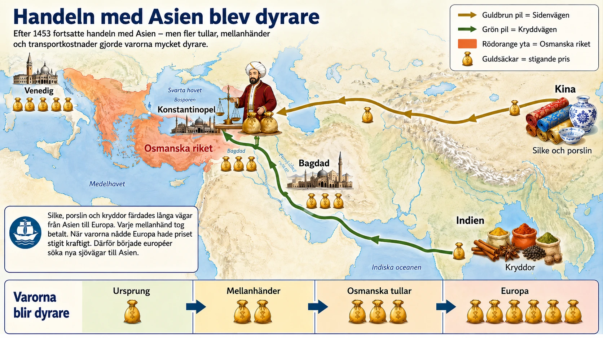
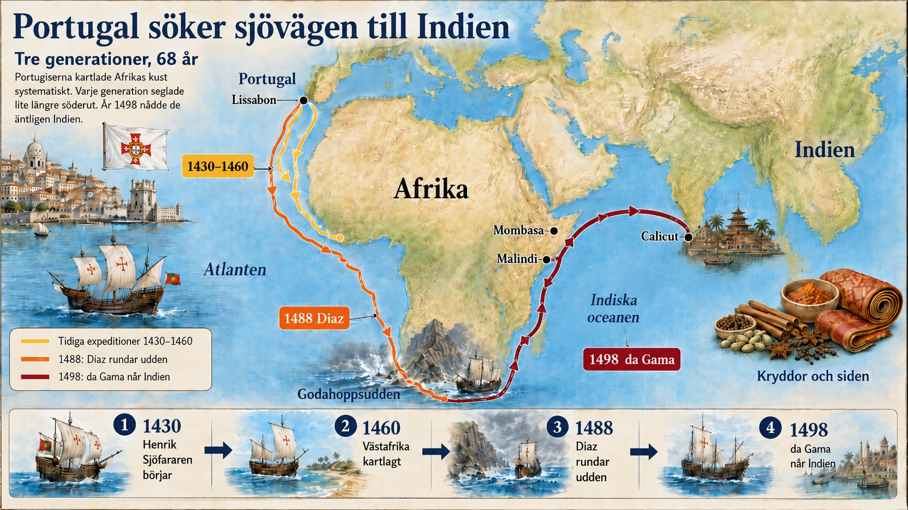
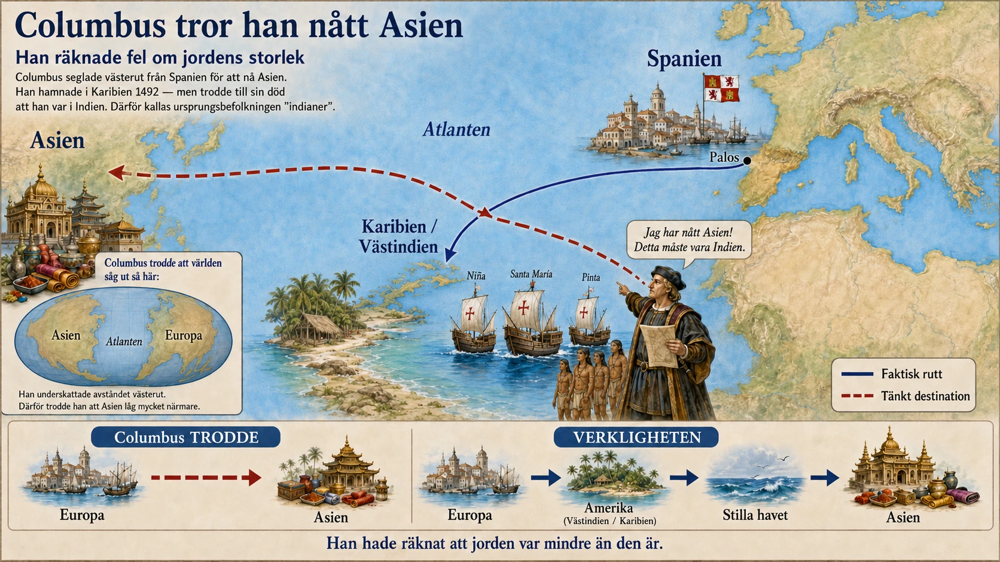
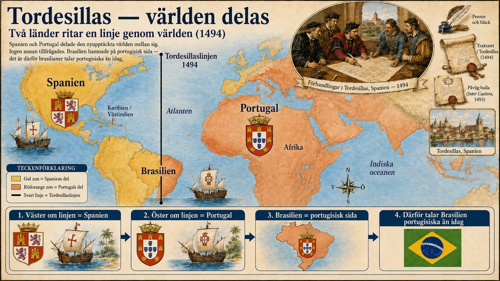

— Europas väg ut på haven —
Titta på kartan innan du läser vidare:

Under 1400-talet började Europas kungar, köpmän och sjöfarare söka nya vägar ut i världen. De ville hitta nya handelsvägar och nya sätt att tjäna pengar. Det här blev början på det vi kallar upptäcktsresorna.
Européerna gav sig inte ut på haven bara för att de var nyfikna. Det fanns flera tydliga orsaker. Två av de viktigaste var att handeln med Asien blev svårare efter att Östrom föll 1453, och att Portugal började utforska Afrikas västkust för att hitta egna vägar in i handeln.
I nästan tusen år hade Östrom varit en viktig makt i östra Medelhavet. Huvudstaden hette Konstantinopel. Staden låg vid sundet mellan Medelhavet och Svarta havet och var en knutpunkt för handel mellan Europa och Asien.
År 1453 erövrades Konstantinopel av osmanerna, ett turkiskt-muslimskt rike som hade vuxit sig starkt. Staden blev huvudstad i Osmanska riket och fick senare namnet Istanbul.
Detta fick stora konsekvenser för européerna. Under medeltiden hade lyxvaror från Asien — siden, kryddor, porslin, ädelstenar — kommit till Europa via handelsvägar som Sidenvägen. Varorna gick genom många mellanhänder och varje gång de bytte ägare blev priset högre. När osmanerna kontrollerade viktiga handelsleder blev handeln dyrare och svårare för europeiska köpmän.
Européerna började tänka: kan vi hitta en annan väg till Asien?
Det land som först satsade på sjöresor var Portugal. Portugal låg längst västerut i Europa, vid Atlanten. Det gjorde landet välplacerat för sjöfart.
En viktig person var prins Henrik Sjöfararen (1394–1460). Han var inte själv någon stor sjöfarare, men han stöttade utforskningen av Afrika. Han betalade kapten och besättningar, samlade kartor och kunskap, och drev hela det portugisiska programmet under flera decennier.
Portugiserna ville få tag på guld, elfenben, kryddor och andra dyrbara varor. De ville köpa varorna direkt från platserna där de fanns, istället för att gå via många mellanhänder. På så sätt skulle de kunna minska beroendet av andra riken.
Portugiserna seglade längre och längre söderut längs Afrikas kust. Varje resa gav ny kunskap om vindar, havsströmmar och kartor.
Samtidigt erövrade och koloniserade portugiserna öar i Atlanten: Madeira, Azorerna, Kap Verde och São Tomé. På flera av dessa öar anlades plantager — stora jordbruk där man odlade en enda vara för försäljning, ofta socker.
På plantagerna användes slavarbetare. Människor fördes dit med våld från Afrika och tvingades arbeta under mycket hårda villkor. På São Tomé, en ö i Guineabukten, växte den modell fram som senare skulle användas i mycket större skala i Amerika: en plantage som drevs helt med afrikanska slavar.
Det som började som en jakt på nya handelsvägar blev därför också början på kolonialism och slavhandel.
Under 1400-talet började Europas kungar, köpmän och sjöfarare söka nya vägar ut i världen. De ville hitta nya handelsvägar, nya varor och nya sätt att tjäna pengar. Det här blev början på det vi ofta kallar upptäcktsresorna.
Men européerna gav sig inte ut på haven bara för att de var nyfikna. Det fanns flera tydliga orsaker. Två av de viktigaste var att handeln med Asien blev svårare efter Östroms fall 1453, och att Portugal började utforska Afrikas västkust för att hitta egna vägar in i handeln.
I nästan tusen år hade Östrom, eller Bysantinska riket, varit en viktig makt i östra Medelhavet. Huvudstaden hette Konstantinopel. Staden låg mycket strategiskt mellan Europa och Asien. Den låg vid sundet mellan Medelhavet och Svarta havet och fungerade som en viktig knutpunkt för handel.
År 1453 erövrades Konstantinopel av osmanerna, ett turkiskt-muslimskt rike som växte sig starkt under senmedeltiden. Efter erövringen blev staden huvudstad i det Osmanska riket och fick senare namnet Istanbul.
För européerna fick detta stora konsekvenser. Under medeltiden hade många lyxvaror från Asien nått Europa via handelsvägar som gick genom Mellanöstern och östra Medelhavet. En av de viktigaste handelsvägarna var Sidenvägen. Där transporterades varor från Kina, Indien och andra delar av Asien västerut.
Det handlade om varor som siden, kryddor, porslin, parfymer, färgämnen, ädelstenar och andra dyrbara produkter. Kryddor var särskilt viktiga. I Europa användes de både för smak, medicin och som statussymbol. Den som hade råd med peppar, kanel, nejlika eller muskot visade att den var rik.
Men handeln gick genom många områden och passerade många mellanhänder. Varje gång varorna bytte ägare kunde priset öka. Det kunde också tas ut avgifter och tullar längs vägen. När osmanerna kontrollerade viktiga handelsleder blev handeln inte helt avstängd, men för många europeiska köpmän blev den dyrare, svårare och mer beroende av andra makter.
Det här gjorde att flera europeiska länder började tänka: kan vi hitta en annan väg till Asien?
Om européerna kunde hitta egna handelsvägar skulle de kunna minska beroendet av andra riken, köpmän och mellanhänder. Då skulle de kunna köpa varor billigare och sälja dem dyrare i Europa. Därför blev jakten på nya vägar till handeln en viktig drivkraft bakom upptäcktsresorna.
Det land som först satsade riktigt målmedvetet på sjöresor var Portugal. Portugal låg längst västerut i Europa, vid Atlanten. Det gjorde landet välplacerat för sjöfart. Under 1400-talet började portugisiska sjöfarare därför utforska Afrikas västkust.
En viktig person var prins Henrik Sjöfararen (1394–1460). Han var själv ingen stor sjöfarare, men han stöttade utforskningen av Afrika under nästan hela sitt liv. Han finansierade expeditioner, samlade kartor och kunskap, och anlitade skickliga kapten. Tack vare hans uthålliga arbete kunde Portugal bygga upp den kunskap som behövdes för längre och längre resor söderut.
I den här första fasen var Portugals viktigaste mål inte att genast segla hela vägen runt Afrika. Det primära målet var i stället att komma längre och längre söderut längs Afrikas kust och hitta nya vägar in i handeln med Afrika och Asien.
Portugiserna ville få tag på varor som guld, elfenben, kryddor och andra dyrbara handelsvaror. Men handeln kontrollerades ofta av olika folk, riken och handelsstäder. De kunde ta ut tullar, avgifter och andra kostnader när varor passerade deras områden. På så sätt blev handeln dyrare för européerna.
Därför ville Portugal försöka hitta egna vägar. Om portugiserna kunde segla längs Afrikas kust och nå handelsplatser direkt, skulle de kunna minska beroendet av mellanhänder. Det handlade alltså om direkthandel. Direkthandel betyder att man försöker köpa varor direkt från platsen där de finns, i stället för att köpa dem genom många andra handelsled.
Portugal byggde upp sin kunskap steg för steg. Sjöfarare seglade längre och längre söderut. De lärde sig mer om vindar, havsströmmar, kartor och navigation. Varje resa gav ny kunskap som kunde användas på nästa resa. På så sätt blev utforskandet av Afrikas kust en långsam men viktig process.
Samtidigt erövrade och koloniserade portugiserna öar i Atlanten: Madeira, Azorerna, Kap Verde och senare São Tomé i Guineabukten utanför Afrikas västkust. På flera av dessa öar anlades plantager. En plantage är ett stort jordbruk där man ofta odlar en enda vara för försäljning, till exempel socker.
På plantagerna användes slavarbetare. Människor fördes dit med våld från Afrika och tvingades arbeta under mycket hårda villkor. Detta blev en viktig och mörk del av den europeiska expansionen.
São Tomé är värd att stanna vid. Ön blev under slutet av 1400-talet en av Europas första riktigt stora plantagekolonier — en plats där sockerproduktion drevs helt med afrikansk slavarbetskraft. Den modell som utvecklades där — sockerrör, plantager, slavarbete — skulle senare användas i mycket större skala i Amerika när européerna kommit dit.
Redan innan européerna nådde Amerika hade alltså slavarbete och plantageekonomi börjat växa fram på öar i Atlanten.
Portugals resor längs Afrikas kust handlade därför både om handel och makt. De ville hitta vägar förbi de folk och riken som gjorde handeln dyr genom tullar och avgifter. Men de började också ta kontroll över öar, handelsplatser, människor och resurser. Det som började som en jakt på nya handelsvägar blev också början på kolonialism och slavhandel.
Upptäcktsresorna hade flera orsaker, men två av de viktigaste var handel och pengar. När Konstantinopel föll 1453 och osmanerna tog kontroll över viktiga områden i östra Medelhavet blev handeln med lyxvaror från Asien mer komplicerad för européerna. Samtidigt började Portugal söka nya vägar till rikedom. Portugiserna ville komma längre ned längs Afrikas västkust och hitta vägar förbi mellanhänder, tullar och avgifter. Under sina resor tog de också kontroll över öar i Atlanten, där de skapade plantager med slavarbetare.
Det här blev början på en ny tid i världshistorien. Europa började vända blicken ut över haven. Handelsvägar förändrades, nya kontakter skapades — men också erövring, slavhandel och kolonialism växte fram.
En enkel orsakskedja: Lyxvaror från Asien var eftertraktade → handeln via land blev dyr och svår → Portugal började utforska Afrikas västkust → portugiserna försökte hitta vägar förbi mellanhänder, tullar och avgifter → de tog kontroll över öar i Atlanten → plantager och slavarbete blev en del av den europeiska expansionen.
Mitten av 1400-talet var en orolig tid för Europa. Den medeltida ordningen var inte längre lika självklar som tidigare. Digerdöden hade skakat tron på att kyrkan kunde skydda människor. Renässansen hade börjat ifrågasätta den auktoritetskunskap som universiteten byggde på. Och i öst kom ett hot som européerna länge fruktat: det Osmanska riket växte snabbt och hotade att stänga av de gamla handelsvägarna.
År 1453 hände det. Konstantinopel föll.
Konstantinopel hade varit mer än en stad. Den hade varit huvudstad i det östromerska riket i över tusen år. Den hade hållit kvar det grekiska språket och den klassiska bildningen även när Västeuropa förlorade mycket av sin antika kunskap (se avsnitt 12 Renässansen). Den hade varit en kontaktpunkt mellan kristen och muslimsk värld, mellan Europa och Asien.
När osmanerna under sultan Mehmet II erövrade staden 1453 var det därför inte bara en militär händelse. Det var en symbolisk omvälvning. Den sista resten av Romarriket föll. Många bysantinska lärda flydde västerut till Italien — vilket gav renässansen ny energi. Men för handeln innebar fallet att europeiska köpmän nu var ännu mer beroende av att osmanerna släppte fram varor.
Det är en vanlig förenkling att säga att osmanerna "stängde" handeln. Det stämmer inte riktigt. Handeln fortsatte, men på osmanska villkor. Tullar höjdes. Vissa varor blev dyrare. Europeiska köpmän förlorade sin förhandlingsposition. Det var inte en stängd dörr — det var en dyrare dörr.
Det är värt att fråga: varför just Portugal? Italien var mycket rikare. Venedig och Genua hade årtionden av sjöfartserfarenhet i Medelhavet. Spanien var större. Frankrike och England var mäktigare på land.
Svaret ligger delvis i geografin. Portugal var Europas mest perifera land — det låg längst västerut, vid Atlanten. För Medelhavshandeln var det en nackdel: Portugal var långt från de stora handelsplatserna i Italien och Mellanöstern. Men för Atlanten var det perfekt. Portugal hade vinden i ryggen, så att säga.
Den andra faktorn var politisk vilja. Portugal hade just enats som rike under 1400-talet och kungarna sökte efter nya sätt att stärka sin makt. Sjöfart var ett sätt att skapa rikedom utan att behöva strida mot starkare europeiska grannar.
Och så fanns prins Henrik Sjöfararen (1394–1460). Han var inte själv kapten på något skepp. Hans betydelse låg i något annat: han var systematisk. Under fyrtio år finansierade han expedition efter expedition längs Afrikas kust. Han samlade portugisiska, italienska, judiska och arabiska experter på navigation. Han byggde upp en kunskapsbank av kartor och rapporter. Varje resa skulle bidra med ny kunskap.
Det var ett forskningsprogram i modern mening, kanske historiens första. Och det var en av anledningarna till att Portugal — och inte Italien eller Spanien — blev först.
När portugiserna utforskade Afrikas kust koloniserade de successivt öarna i Atlanten. Madeira koloniserades från 1420-talet, Azorerna från 1430-talet, Kap Verde från 1450-talet, São Tomé från 1490-talet.
På varje ö testades olika sätt att tjäna pengar. På Madeira blev det vin och sedan socker. På Azorerna spannmål och boskap. På Kap Verde och São Tomé blev det socker och slavhandel.
Det är São Tomé som har den mörkaste betydelsen i världshistorien. Ön ligger i Guineabukten, alldeles vid Afrikas västkust. Den var obebodd när portugiserna kom dit. Klimatet var perfekt för sockerrör, ett tropiskt växt som krävde mycket arbetskraft. Och så nära Afrika att slavar kunde transporteras med kort sjöresa.
Under sent 1400-tal och tidigt 1500-tal blev São Tomé den första riktigt storskaliga plantagekolonin med afrikansk slavarbetskraft. Här utvecklades den modell som senare skulle exporteras till Brasilien, Karibien och Nordamerika: sockerrör + plantage + afrikanska slavar.
Detta är en obekväm sanning som inte alltid lyfts fram i historieskrivningen. Slaveriet i Amerika uppfanns inte där. Det importerades. Modellen fanns färdig redan när Columbus seglade.
Det är frestande att se Portugals afrikautforskning som ren handel. Men det var mer än så.
Längs Afrikas kust byggde portugiserna fort och handelsstationer — befästa platser där deras egna soldater och köpmän kunde kontrollera handeln. Ett av de mest kända var Elmina vid Guldkusten (dagens Ghana), byggt 1482. Det var inte en handelsstation hos någon afrikansk härskare — det var en portugisisk fästning på afrikansk mark.
Portugiserna ville inte bara handla. De ville styra handeln. De ville bestämma vem som fick köpa, vem som fick sälja, vilka rutter som fick användas. När de senare nådde Indiska oceanen följde de samma mönster: handelsstationer, fort, vapen, kontroll.
Detta är kolonialismens början i modern mening. Inte i form av stora landområden (det kom senare i Amerika), utan i form av strategiska punkter där europeiska makter tog kontroll över handelsvägar.
Vad ska du ta med dig från §A?
Den enkla berättelsen säger att européerna behövde nya handelsvägar efter Östroms fall, så de seglade ut och utforskade världen. Det är inte fel — men det är ofullständigt.
Den fullständiga berättelsen är dubbel:
På ena sidan: handeln, navigationen, kunskapsuppbyggnaden, den växande europeiska världsbilden. Detta är en imponerande berättelse om mänsklig ansträngning och teknisk utveckling.
På andra sidan: erövringen, slavhandeln, plantagerna, kolonialismen. Detta är en berättelse om förtryck, våld och utnyttjande som drabbade miljoner människor.
Båda är sanna samtidigt. Det är detta som gör upptäcktsresorna så svåra att förstå rätt. De var inte bara goda eller bara onda. De var bådadera — och det är därför historien om dem fortfarande betyder så mycket idag.
Titta på kartan innan du läser vidare:

När Portugal hade börjat utforska Afrikas västkust ville de komma allt längre söderut. Målet var att hitta en sjöväg som kunde föra portugisiska skepp ända fram till Indien och Asien. Där fanns varorna européerna ville ha: kryddor, siden, ädelstenar och andra lyxvaror.
Men vägen var farlig och okänd. Ingen portugisisk expedition visste exakt hur långt Afrika sträckte sig söderut. Ingen visste heller om det faktiskt gick att segla runt kontinenten.
Två sjöfarare blev särskilt viktiga: Bartolomeu Dias och Vasco da Gama.
År 1487 skickades den portugisiske sjöfararen Bartolomeu Dias ut på en expedition. Hans uppdrag var att segla längre söderut längs Afrikas kust än någon portugis hade gjort.
Resan blev mycket svår. Vid Afrikas sydspets möts starka havsströmmar och kraftiga vindar. Där kan vågorna bli mycket höga. För små träskepp på 1400-talet var det här extremt farligt.
Stormar pressade skeppen bort från kusten. När vädret till slut lugnade sig seglade Dias österut och sedan norrut. Då förstod han något viktigt: de hade passerat Afrikas sydspets.
Men besättningen var rädd och utmattad. De vägrade segla längre och krävde att expeditionen skulle vända tillbaka.
På hemvägen passerade Dias den udde som låg längst i söder. Eftersom resan hade varit så våldsam kallade han platsen för Stormarnas udde. Men den portugisiske kungen ville inte att platsen skulle förknippas med rädsla. Han döpte om udden till Goda hopps udde — för att namnet skulle locka fler att fortsätta utforska vägen.
Några år senare tog Portugal nästa stora steg. År 1497 skickades Vasco da Gama ut med en ny expedition. Hans uppdrag var att fortsätta vidare efter Afrikas sydspets och försöka nå Indien.
Vasco da Gama seglade söderut längs Afrikas kust, rundade Goda hopps udde och fortsatte sedan upp längs Afrikas östkust. Där mötte portugiserna handelsstäder som redan hade kontakter med den större handeln kring Indiska oceanen.
Det är viktigt att förstå att portugiserna inte kom till ett tomt hav. I Indiska oceanen fanns redan ett stort handelsnätverk. Arabiska, afrikanska och indiska köpmän hade länge handlat med varandra där. De kände till vindarna, hamnarna och sjövägarna mycket bättre än portugiserna.
År 1498 nådde Vasco da Gama staden Calicut i Indien. Det var ett historiskt ögonblick. För första gången hade en portugisisk expedition seglat från Europa, runt Afrikas sydspets och hela vägen till Indien.
Före dessa resor hade mycket av handeln mellan Europa och Asien gått genom många mellanhänder. Varje gång varorna bytte ägare kunde priset öka. När Portugal hittade sjövägen till Indien kunde de försöka handla mer direkt. Då kunde vinsterna bli större.
Men detta handlade inte bara om handel. Det handlade också om makt. Portugal började bygga upp ett nät av handelsstationer och fort längs sjövägarna. De ville inte bara delta i handeln. De ville styra den.
Detta blev början på en ny tid, där europeiska länder började använda sjöfart, vapen och kolonier för att ta kontroll över handelsvägar i världen.
När Portugal hade börjat utforska Afrikas västkust ville de komma allt längre söderut. Målet var att hitta en sjöväg som kunde föra portugisiska skepp vidare mot Indien och Asien. Där fanns varor som européerna ville ha: kryddor, siden, ädelstenar och andra lyxvaror.
Men vägen var farlig och okänd. Ingen portugisisk expedition visste exakt hur långt Afrika sträckte sig söderut. Ingen visste heller om det faktiskt gick att segla runt kontinenten.
Två sjöfarare blev särskilt viktiga i den här utvecklingen: Bartolomeu Dias och Vasco da Gama.
År 1487 skickades den portugisiske sjöfararen Bartolomeu Dias ut på en expedition. Hans uppdrag var att segla längre söderut längs Afrikas kust än tidigare portugisiska sjöfarare hade gjort.
Resan blev mycket svår. Ju längre söderut skeppen kom, desto mer förändrades havet. Vid Afrikas sydspets möts starka havsströmmar och kraftiga vindar. Där kan vågorna bli mycket höga. För små träskepp på 1400-talet var det här extremt farligt.
Besättningen hamnade i hårt väder. Stormar pressade skeppen bort från kusten. Under en tid såg de inte land alls. När vädret till slut lugnade sig seglade Dias österut och sedan norrut. Då förstod han något mycket viktigt: de hade passerat Afrikas sydspets.
Detta var en enorm upptäckt. Det visade att Afrika inte fortsatte hur långt söderut som helst. Det gick faktiskt att komma runt kontinenten.
Men besättningen var rädd och utmattad. De hade varit länge till sjöss, vädret hade varit hårt och de visste inte vad som väntade längre fram. När Dias ville fortsätta österut protesterade männen ombord. Besättningen vägrade segla längre. De krävde att expeditionen skulle vända tillbaka till Portugal.
Dias fick ge sig. På hemvägen såg han den udde som låg längst i söder. Eftersom resan hade varit så våldsam och farlig kallade han platsen för Stormarnas udde. Namnet passade bra. Det beskrev vad sjömännen hade upplevt: stormar, höga vågor, starka vindar och ett hav som nästan verkade omöjligt att besegra.
Men den portugisiske kungen ville inte att platsen skulle förknippas med rädsla. Han ville att fler sjöfarare skulle våga fortsätta utforska vägen. Därför döpte han om udden till Goda hopps udde.
Det nya namnet var smart. Det sa till sjöfararna: här finns inte bara fara, här finns också hopp. Hoppet var att Portugal nu hade hittat början på en sjöväg mot Indien.
Några år senare tog Portugal nästa stora steg. År 1497 skickades Vasco da Gama ut med en ny expedition. Hans uppdrag var att göra det Dias inte hade fått göra: fortsätta vidare efter Afrikas sydspets och försöka nå Indien.
Vasco da Gama seglade söderut längs Afrikas kust, rundade Goda hopps udde och fortsatte sedan upp längs Afrikas östkust. Där mötte portugiserna handelsstäder som redan hade kontakter med den större handeln kring Indiska oceanen.
Det är viktigt att förstå att portugiserna inte kom till ett tomt hav. I Indiska oceanen fanns redan ett stort handelsnätverk. Arabiska, afrikanska, indiska och andra köpmän hade länge handlat med varandra där. De kände till vindarna, hamnarna och sjövägarna mycket bättre än portugiserna.
Vasco da Gamas expedition var därför beroende av lokal kunskap. Med hjälp av navigering och kontakter längs Afrikas östkust kunde expeditionen till slut ta sig över Indiska oceanen.
År 1498 nådde Vasco da Gama staden Calicut i Indien. Det var ett historiskt ögonblick för Portugal. För första gången hade en portugisisk expedition seglat från Europa, runt Afrikas sydspets och hela vägen till Indien.
Det betydde att Portugal nu hade hittat en sjöväg till Asien.
Dias och da Gamas resor förändrade världshistorien. Före dessa resor hade mycket av handeln mellan Europa och Asien gått genom flera mellanhänder. Varor transporterades genom Asien, Mellanöstern och Medelhavet innan de nådde europeiska köpmän. Varje mellanhand kunde ta betalt. Det gjorde varorna dyra.
När Portugal hittade sjövägen till Indien kunde de försöka handla mer direkt. De ville köpa kryddor och andra lyxvaror närmare platsen där de producerades. Då kunde vinsterna bli större.
Men detta handlade inte bara om handel. Det handlade också om makt. Portugal började bygga upp ett nät av handelsstationer, fort och kontrollpunkter längs sjövägarna. De ville inte bara delta i handeln. De ville styra den.
Detta blev början på en ny tid, där europeiska länder började använda sjöfart, vapen och kolonier för att ta kontroll över handelsvägar i världen.
Bartolomeu Dias visade att det gick att runda Afrikas sydspets. Hans resa var mycket farlig, med stormar, starka havsströmmar och höga vågor. När besättningen inte vågade fortsätta tvingades han vända tillbaka. Han kallade platsen Stormarnas udde, men den portugisiske kungen döpte om den till Goda hopps udde för att namnet skulle inge hopp och locka fler att fortsätta utforska vägen.
Vasco da Gama fortsatte några år senare. Han rundade Goda hopps udde, seglade vidare längs Afrikas östkust och nådde Indien år 1498. Därmed hade Portugal hittat den sjöväg till Asien som man länge hade sökt.
En enkel orsakskedja: Portugal ville nå handeln med Asien → Dias rundade Afrikas sydspets → platsen fick namnet Goda hopps udde → Vasco da Gama fortsatte vägen → Portugal nådde Indien sjövägen → handeln och makten över haven förändrades.
När Bartolomeu Dias seglade ut från Lissabon år 1487 visste han inte vad han skulle hitta. Ingen i Portugal — och egentligen ingen i Europa — visste hur långt Afrika sträckte sig söderut. På medeltidens kartor slutade världen ofta vid Afrikas norra eller mellersta del. Söder om det fanns terra incognita, det okända landet.
Det är värt att stanna vid det här ett ögonblick. Vi som lever idag vet hur jorden ser ut. Vi har satellitbilder, kartor och Google Earth. Men för portugiserna på 1400-talet var Afrika söder om Sahara nästan helt okänd mark — och Atlanten söder om Marocko nästan helt okänt hav.
Att segla ut betydde att segla in i mörker.
Hur kunde portugiserna då våga? Svaret är att de hade rätt verktyg.
Den karavellen var en relativt ny skeppstyp som portugiserna och spanjorerna hade utvecklat under 1400-talet. Karavellen kombinerade två segeltyper: råsegel (som var bra för medvind) och latinsegel (trekantiga segel som var bra för kryssning, alltså att segla mot vinden). Det betydde att karavellen kunde manövrera i olika vindförhållanden. Den var också relativt liten och lätt, vilket gjorde den smidig.
Navigationen byggde på flera tekniska hjälpmedel. Kompassen (ursprungligen kinesisk, kommen till Europa via arabvärlden) gav riktning. Astrolaben och senare kvadranten lät navigatörerna mäta solens eller stjärnors höjd över horisonten — och därmed räkna ut latituden (hur långt norr eller söder de befann sig). Longitud — hur långt öster eller väster — var däremot svårt att mäta korrekt. Den problemet skulle inte lösas förrän på 1700-talet.
Det betyder att portugiserna kunde navigera med rimlig precision i nord-sydlig riktning, men att de fick gissa mer i öst-västlig riktning. Det förklarar också varför Atlanten kändes så skrämmande: man kunde aldrig vara säker på hur långt västerut man hade drivits.
När Dias närmade sig Afrikas sydspets i januari 1488 hände något ovanligt. Skeppen blev pressade söderut av en kraftig storm. Under tretton dagar såg besättningen ingen land alls. När vädret lugnade sig vände Dias norrut för att hitta kusten igen — men han hittade ingen.
Då vände han österut, och slutligen norrut. Då upptäckte han land — och insåg att han hade passerat något. Han måste ha rundat Afrikas sydspets utan att se den.
Det är värt att uppmärksamma detta. Dias upptäckte inte sydspetsen genom att se den. Han upptäckte den genom att inse att han måste ha passerat den. Det är upptäckter genom slutsats — inte upptäckter genom observation. Det är hur navigation faktiskt fungerade.
Han seglade ytterligare en bit österut, men besättningen vägrade fortsätta. De hade tappat så mycket tid och proviant att resan kändes självmordsbenägen. Dias hade ett val: tvinga besättningen och riskera myteri, eller vända hem och rapportera vad han upptäckt.
Han vände hem. På hemvägen såg han för första gången den udde som låg längst i söder, och då kunde han bekräfta vad han misstänkt: Afrika tog slut här.
Att kungen döpte om Stormarnas udde till Goda hopps udde är en av historiens mest pedagogiska byten av namn. Det visar något viktigt om hur berättelser om historia formas.
Namnet Stormarnas udde var sant. Det beskrev den verkliga upplevelsen för Dias och hans besättning. Men det var ett namn som skrämmer. Namnet Goda hopps udde var mer en politisk önskan än en geografisk verklighet. Det var ett namn som lockar.
Detta var medveten propaganda. Den portugisiske kungen behövde att fler sjöfarare skulle våga fortsätta utforska vägen. Han behövde att de skulle se möjligheter, inte hot. Genom att ändra namnet ändrade han hur människor mindes platsen.
Detta är fortfarande viktigt att förstå. Namn på platser, händelser och tider bär ofta en politisk laddning. "Upptäckten av Amerika" är ett annat exempel — namnet förutsätter att det fanns något att upptäcka, vilket är européernas perspektiv. För människorna som redan bodde där var det ingen upptäckt. Det var en invasion.
När Vasco da Gama seglade in i Indiska oceanen kom han inte till en okänd värld. Han kom till en värld som hade varit handelsknutpunkt i tusentals år.
I Indiska oceanen mötte sjöfarare från östra Afrika, arabvärlden, Persien, Indien, Sydostasien och Kina. Det fanns ett etablerat handelssystem som följde monsunvindarna — under sommarmonsunen blåste det österut, under vintermonsunen västerut. Sjöfarare visste exakt när de skulle segla i vilken riktning. Det fanns hamnstäder med tullsystem, banker, marknader och förtroendekedjor mellan köpmän.
Detta är viktigt att förstå för att inte glorifiera Vasco da Gama. Han var inte en heroisk pionjär som öppnade en ny värld. Han var en outsider som tog sig in i en värld som redan existerade — och som ofta tog hjälp av lokala lotsar och köpmän för att klara av det.
Den arabiske lotsen Ahmad ibn Majid sägs ha hjälpt da Gama att navigera den sista sträckan över Indiska oceanen från östra Afrika till Calicut. Hans namn glöms ofta bort i berättelser om "upptäckten" av sjövägen till Indien. Men utan hans kunskap hade da Gama troligen inte klarat det.
När Vasco da Gama anlände till Calicut 1498 förväntade han sig att bli väl mottagen. Calicut var en av Indiens rikaste hamnstäder, styrd av en hindusisk härskare som kallades Zamorin. Da Gama hade med sig gåvor — men gåvorna var pinsamt billiga jämfört med vad arabiska köpmän brukade ge.
Mötet blev en besvikelse för båda sidorna. Da Gamas gåvor skrattades åt. De portugisiska varorna han hade med sig var inte särskilt eftertraktade i Indien. Och Zamorin hade ingen anledning att gynna européerna framför de etablerade arabiska handelspartner som han haft i hundratals år.
Men da Gama insåg något viktigt under sin resa. Indien hade enorma rikedomar. Kryddor som peppar och kanel växte i överflöd. Om Portugal kunde få tillgång till dessa varor direkt — utan att gå via arabiska mellanhänder — kunde vinsterna bli astronomiska.
På hemresan tog da Gama med sig så mycket peppar och andra kryddor han kunde köpa. När han kom tillbaka till Lissabon år 1499 hade hans last ett värde av många gånger vad expeditionen kostat.
Sjövägen till Indien var öppen.
Det som följde var inte vänlig handel. Portugiserna förstod snabbt att de inte kunde konkurrera med arabiska köpmän på lika villkor. Araberna hade lägre kostnader, bättre nätverk och bättre relationer med lokala härskare.
Portugiserna valde därför en annan strategi: våld. De började bygga befästa handelsstationer längs den indiska kusten och i andra delar av Indiska oceanen. De använde sina kanoner — som var bättre än de flesta lokala vapen — för att tvinga andra sjöfarare att betala tull till Portugal. De anföll arabiska och indiska handelsfartyg och förstörde dem.
Detta var en helt ny typ av handel: en handel som inte byggde på överenskommelser utan på militärt övertag. Portugiserna kallade det att "ta kontroll över haven". Vad det egentligen var, var pirateri sanktionerat av en europeisk stat.
Vad ska du ta med dig från §B?
På ena sidan: en imponerande berättelse om mod, navigation och teknisk skicklighet. Dias och da Gama gjorde något verkligen anmärkningsvärt. De seglade in i okända vatten. De överlevde stormar och umbäranden. De öppnade en ny förbindelse mellan kontinenter.
På andra sidan: en berättelse om våld, exploatering och kolonialismens första steg. När Portugal hade hittat sjövägen till Indien började de bygga ett system av kontroll, vapen och tvång. De byggde första utkasten av den europeiska världshegemoni som skulle vara i flera hundra år.
Båda är sanna samtidigt. Det är inte ärligt att se bara den ena. Att kalla Dias och da Gama enbart hjältar är att ignorera vad som följde. Att kalla dem enbart förövare är att ignorera de tekniska och mänskliga prestationer som faktiskt fanns.
Det här är upptäckternas grundparadox: de var samtidigt prestationer och katastrofer. Och de förändrade världen för alltid.
Titta på kartan innan du läser vidare:

Under medeltiden fanns muslimska riken på den iberiska halvön — den halvö där Spanien och Portugal ligger idag. Under flera hundra år hade kristna kungariken i norr långsamt tagit tillbaka mer och mer land. Denna långa process kallas reconquista, som betyder ungefär "återerövring".
På 1400-talet fanns bara ett muslimskt rike kvar: Granada i södra Spanien.
När Isabella av Kastilien och Ferdinand av Aragonien gifte sig 1469 hade två stora kristna kungariken bundits ihop. De kallades de katolska monarkerna. År 1492 erövrade de Granada. Det var slutet på det sista muslimska riket på den iberiska halvön.
Samma år blev viktigt av en annan anledning.
År 1492 lyckades Christofer Columbus övertala Isabella och Ferdinand att satsa pengar på hans idé. Columbus ville hitta en sjöväg till Indien och Asien genom att segla västerut över Atlanten. Han tänkte att man kunde nå handelsplatserna i öster genom att segla åt motsatt håll.
Här är det viktigt att förstå en sak: Columbus behövde inte övertyga någon om att jorden var rund. Många utbildade människor i Europa visste redan att jorden var rund. Problemet var i stället hur stor jorden var. Columbus räknade fel. Han trodde att jorden var mindre än den faktiskt är, och att Asien sträckte sig längre österut än den gör. Därför trodde han att resan västerut från Europa till Asien var mycket kortare än den i verkligheten var.
Columbus idé var alltså både modig och felaktig. Han hade rätt i att man kunde segla västerut över Atlanten och hitta land. Men han hade fel om vad han skulle hitta. Han trodde att han skulle nå Asien. I själva verket låg en hel världsdel i vägen: Amerika.
Columbus fick inte stöd direkt. Spanien var upptaget med kriget mot Granada. Hans plan undersöktes men sköts upp. Först efter Granadas fall 1492 blev det möjligt för kungaparet att satsa på hans resa.
För Spanien passade Columbus idé in i tiden. Portugal hade redan utforskat Afrikas kust och försökte nå handeln med Asien sjövägen. Spanien ville inte hamna efter. Om Columbus hade rätt kunde Spanien hitta en egen väg till kryddor, siden, guld och andra lyxvaror — utan att behöva följa Portugals väg runt Afrika.
Därför blev 1492 ett avgörande år. Spanien hade just besegrat Granada och stärkt sin kungamakt. Samtidigt öppnade kungaparet dörren för ett nytt projekt: att segla västerut för att nå österut.
Under medeltiden fanns muslimska riken på den iberiska halvön, alltså den halvö där Spanien och Portugal ligger idag. Området kallades ofta al-Andalus. Under flera hundra år hade kristna kungariken i norr långsamt tagit tillbaka mer och mer land. Denna långa process kallas reconquista, som betyder ungefär "återerövring".
På 1400-talet fanns bara ett muslimskt rike kvar på halvön: Granada i södra Spanien.
När Isabella av Kastilien och Ferdinand av Aragonien gifte sig år 1469 hade två viktiga kristna kungariken knutits närmare varandra. De blev kända som de katolska monarkerna. År 1492 erövrade de Granada. Det blev slutet på det sista muslimska riket på den iberiska halvön — sjuhundra år av kamp om iberisk mark var över.
Samma år blev också viktigt av en annan anledning. Det var då Christofer Columbus lyckades få Isabella och Ferdinand att satsa pengar på hans idé. Columbus ville hitta en sjöväg till Indien och Asien genom att segla västerut över Atlanten. Han tänkte att man kunde nå de rika handelsområdena i öster genom att segla åt motsatt håll.
Det är viktigt att förstå en sak: Columbus behövde inte övertyga de lärda om att jorden var rund. Många utbildade människor i Europa visste redan att jorden var rund — det hade varit känt sedan antiken. Problemet var i stället hur stor jorden var.
Columbus använde beräkningar som gjorde jorden mindre än den egentligen är. Han trodde också att Asien sträckte sig längre österut än det faktiskt gör. Därför räknade han med att avståndet västerut från Europa till Asien var mycket kortare än det i verkligheten var.
Columbus idé var därför både modig och felaktig. Han hade rätt i att man kunde segla västerut över Atlanten och hitta land. Men han hade fel om vad han skulle hitta. Han trodde att han skulle nå Asien. I själva verket låg en hel världsdel i vägen: Amerika.
Columbus fick inte genast stöd. När han kom till Spanien fick han lägga fram sin plan för kungaparet, men Spanien var upptaget med kriget mot Granada. En grupp lärda fick undersöka hans förslag, men beslutet sköts upp. Columbus fick alltså vänta. Hans plan accepterades inte direkt.
Först efter Granadas fall 1492 blev det möjligt för kungaparet att satsa på hans resa. Innan dess hade Columbus faktiskt försökt få stöd även från Portugal, men portugiserna hade tackat nej. Deras egen väg runt Afrika fungerade redan ganska bra, och de räknade ut att Columbus avståndsberäkningar var för optimistiska.
För Spanien passade Columbus idé in i tiden. Portugal hade redan utforskat Afrikas kust och försökte nå handeln med Asien sjövägen. Spanien ville inte hamna efter. Om Columbus hade rätt kunde Spanien hitta en egen väg till kryddor, siden, guld och andra lyxvaror utan att behöva följa Portugals väg runt Afrika.
Därför blev 1492 ett avgörande år för Spanien. Tre stora händelser inträffade nästan samtidigt:
På bara några månader gick Spanien från att vara ett land i krig med ett muslimskt grannrike, till att vara ett land som planerade att segla västerut över Atlanten. Spanien sökte sig utåt, mot okänt vatten.
För att förstå varför Spanien blev en stor sjöfartsmakt måste man förstå reconquistan. På 700-talet hade arabiska arméer erövrat större delen av den iberiska halvön. Det muslimska riket — som kallades al-Andalus — blev under flera hundra år en av Europas mest avancerade civilisationer. I städer som Córdoba och Toledo arbetade muslimska, judiska och kristna lärda tillsammans. Mycket av antikens kunskap bevarades och utvecklades där (se Senmedeltiden avsnitt 12).
Men i norr fanns kristna kungariken som långsamt växte. Generation efter generation pressade de söderut. Detta var inte en sammanhängande krigskampanj — det var hundratals små krig under hundratals år. Men över tid förändrade det den iberiska kartan.
På 1400-talet hade det muslimska riket krympt till bara Granada i söder. Och i norr hade de kristna kungarikena börjat enas — först Kastilien och Aragonien, sedan Portugal som blev en separat kungariket.
År 1469 gifte sig Isabella av Kastilien med Ferdinand av Aragonien. Det var ett politiskt äktenskap som skulle förändra Spanien. Isabella var arvtagare till Kastilien — det största kungariket. Ferdinand var arvtagare till Aragonien — det viktigaste handelsriket vid Medelhavet. Tillsammans förenade de två viktiga kristna kungariken.
Det är värt att uppmärksamma Isabellas roll. I en värld där kvinnor sällan styrde var hon en regerande drottning i sitt eget rike. Hon ärvde Kastilien 1474 och tog över direkt. Det var hon — inte Ferdinand — som senare gav slutgiltigt stöd till Columbus expedition. Hon var en av de mäktigaste kvinnorna i Europa.
År 1492 erövrade Isabella och Ferdinand Granada. Reconquistan var över efter nästan 800 år. Påven gav dem titeln "de katolska monarkerna" — los Reyes Católicos — som tack för att de hade återerövrat halvön för kristendomen.
Innan Granada föll hade Spanien sina resurser bundna i ett dyrt krig. Soldater behövdes. Pengar gick åt. Kungaparet kunde inte starta nya stora projekt.
När Granada föll i januari 1492 frigjordes plötsligt enorma resurser. Den spanska armén var redan mobiliserad, vana vid strid och vid att operera i fält. Skattepengarna kunde användas till annat. Och kungamakten hade nu stigit i status — de katolska monarkerna var Europas hjältar.
Detta är den verkliga anledningen till att 1492 blev året för Columbus. Det handlade inte bara om hans övertalningsförmåga. Det handlade om att Spanien plötsligt hade både kapacitet och vilja att starta något nytt.
Christofer Columbus (1451–1506) var född i Genua i Italien. Han var inte spanjor från början. Han hade arbetat som sjöman och köpman under många år och bodde tidvis i Portugal. Det var där han började utveckla sin idé om att segla västerut till Asien.
Columbus baserade sin plan på flera felaktiga beräkningar:
När man kombinerar dessa fel blir resultatet att Columbus trodde att det var ungefär 4 000 km från Kanarieöarna västerut till Japan. Den verkliga avståndet är ungefär 19 000 km — fem gånger längre. Hade det inte funnits en hel världsdel i vägen hade Columbus och hans besättning dött av törst och hunger långt innan de nått Asien.
Columbus försökte först få Portugal att finansiera hans expedition. Han kom till Lissabon på 1480-talet och bodde där flera år. Han lade fram sin plan för kung Johan II av Portugal, som tillsatte en grupp lärda för att utvärdera den.
Den portugisiska gruppen sade nej. De räknade ut att Columbus avståndsberäkningar var för optimistiska. De hade rätt. Portugal hade dessutom sin egen plan — Bartolomeu Dias var just iväg på sin expedition runt Afrika, och om den lyckades skulle Portugal ha en bevisad väg till Indien.
När Dias kom tillbaka 1488 med nyheten att Afrikas sydspets var rundbar förlorade Columbus sina sista chanser i Portugal. Då vände han sig till Spanien.
Isabella och Ferdinand tog Columbus förslag på allvar. De tillsatte en kommission av lärda — bland dem prästen Hernando de Talavera — för att utvärdera planen. Kommissionen arbetade i flera år. Och de kom till samma slutsats som portugiserna: Columbus räknade fel.
Men Isabella tvekade. Det fanns något lockande med idén. Och så fanns det politiska argument — om Columbus skulle lyckas, skulle Spanien hamna före Portugal i kapplöpningen om Asien.
I december 1491 var Columbus på väg att ge upp. Han hade fått slutligt nej. Men i januari 1492 — samma månad som Granada föll — ändrade Isabella sig. Hon kallade tillbaka Columbus och godkände hans expedition.
Vad ska du ta med dig från §C?
För det första att 1492 inte var ett ord — det var ett knippe av händelser. Granadas fall, Columbus avtal, judars utvisning från Spanien (också det skedde 1492), allt hände på några månader. Det var ett år då Spanien byggdes om från grunden.
För det andra att Columbus hade fel om allt utom det viktigaste. Han trodde han hittat en kortväg till Asien. Han hade i själva verket hittat en hel ny värld. Hans framgång byggde på hans misstag.
För det tredje att stora historiska händelser ofta kommer av att rätt sak händer vid rätt tid. Columbus hade lagt fram sin plan i åratal. Portugal sade nej. Spanien sade nej. Men när Granada föll och allt annat föll på plats — då blev planen plötsligt möjlig.
Detta är något att komma ihåg när vi senare läser om franska revolutionen och industriella revolutionen. Stora förändringar kommer sällan av en enskild orsak. De kommer när flera orsaker råkar mötas i samma ögonblick.
Titta på kartan innan du läser vidare:

År 1492 lämnade Columbus Spanien med tre fartyg: Santa María, Pinta och Niña. Målet var att segla västerut över Atlanten och hitta en snabbare väg till Indien och Asien.
Resan blev svårare än många hade föreställt sig. Besättningen seglade längre och längre västerut utan att se land. För varje dag ökade oron. Männen började undra om de någonsin skulle kunna komma hem igen. De var rädda för att havet var för stort och att maten skulle ta slut.
Den 12 oktober 1492 såg besättningen äntligen land. De hade nått en ö i Karibien, troligen i Bahamas. Columbus trodde att han hade kommit till öar nära Asien. Därför kallade han människorna han mötte för "indianer", eftersom han trodde att han var nära Indien.
Men Columbus hade inte nått Asien. Han hade kommit till en del av världen som européerna inte tidigare hade känt till.
För människorna som redan bodde där var området förstås inte "nytt". De hade egna samhällen, språk, religioner, handelsvägar och kulturer. Därför är det mer korrekt att säga att Columbus resa blev en europeisk upptäckt av Amerika, inte att Amerika "upptäcktes" i absolut mening.
Columbus själv förstod aldrig riktigt vad han hittat. Han trodde till sin död att han hade varit i Asien.
Columbus resa skapade konflikt mellan Spanien och Portugal. Båda rikena ville ha rätt till nya handelsvägar och nya områden. Påven försökte först lösa konflikten. Senare kom länderna överens i fördraget i Tordesillas år 1494.
I Tordesillasfördraget drogs en tänkt linje genom Atlanten. Områden väster om linjen skulle främst tillhöra Spanien. Områden öster om linjen skulle tillhöra Portugal.
Detta är en viktig förklaring till varför man talar portugisiska i Brasilien idag. När portugisen Pedro Álvares Cabral kom till Brasiliens kust år 1500 låg området på portugisernas sida av linjen. Därför blev Brasilien en portugisisk koloni, medan stora delar av övriga Syd- och Centralamerika blev spanska kolonier.
Columbus resa förändrade världshistorien. Den band ihop Europa, Afrika och Amerika på ett helt nytt sätt. Men följderna blev mycket olika för olika grupper. För europeiska kungariken öppnades möjligheter till rikedom, handel och kolonier. För många ursprungsfolk i Amerika innebar mötet med européerna sjukdomar, våld, tvångsarbete och förlorad självständighet.
År 1492 lämnade Columbus Spanien med tre fartyg: Santa María, Pinta och Niña. Målet var att segla västerut över Atlanten och hitta en snabbare väg till Indien och Asien. Columbus trodde att resan skulle bli kortare än den egentligen var, eftersom han räknade med en för liten jord.
Resan blev svårare än många ombord hade föreställt sig. Besättningen seglade längre och längre västerut utan att se land. För varje dag ökade oron. Männen började undra om de någonsin skulle kunna komma hem igen. De var rädda för att havet var för stort, att maten skulle ta slut och att vindarna skulle göra det omöjligt att återvända.
I början av oktober blev situationen mycket spänd. Den 10 oktober 1492 klagade sjömännen över att de ännu inte hade sett land, att vindarna kunde hindra dem från att komma hem och att förråden kunde ta slut. Det fanns en verklig risk för myteri — alltså att besättningen skulle göra uppror mot Columbus — men han lyckades lugna situationen.
Bara två dagar senare, den 12 oktober 1492, såg besättningen land. De hade nått en ö i Karibien, troligen i Bahamas. Columbus trodde att han hade kommit till öar nära Asien. Därför kallade han människorna han mötte för "indianer", eftersom han trodde att han var nära Indien.
Columbus hade inte nått Asien. Han hade kommit till en del av världen som européerna inte tidigare hade känt till. Men Columbus själv förstod aldrig riktigt detta. Han genomförde fyra resor till Amerika under sin livstid, och han dog 1506 fortfarande övertygad om att han hade besökt öar utanför Asiens kust.
För människorna som redan bodde där var området förstås inte "nytt". De hade egna samhällen, språk, religioner, handelsvägar och kulturer. Därför är det mer korrekt att säga att Columbus resa blev en europeisk upptäckt av Amerika, inte att Amerika "upptäcktes" i absolut mening.
Det dröjde några år innan andra européer började förstå att Columbus inte hade nått Asien. Det var en annan italiensk sjöfarare — Amerigo Vespucci — som tydligast skrev att landområdena på andra sidan Atlanten var en egen världsdel. Det är därför kontinenten heter Amerika efter honom, och inte Columbia efter Columbus. (Mer om detta i djupdykningen om Vespucci.)
Columbus resa skapade också konflikt mellan Spanien och Portugal. Båda rikena ville ha rätt till nya handelsvägar och nya områden. Påven försökte först lösa konflikten genom att dela världen mellan Spanien och Portugal. Senare kom länderna överens i fördraget i Tordesillas år 1494.
I Tordesillasfördraget drogs en tänkt linje genom Atlanten, väster om Kap Verdeöarna. Områden väster om linjen skulle främst tillhöra Spanien, medan områden öster om linjen skulle tillhöra Portugal.
Tänk efter på vad detta innebar. Två europeiska riken — Spanien och Portugal — kom överens om att dela hela världen mellan sig. De frågade inte de människor som redan bodde där. De räknade inte med Frankrike, England, Nederländerna eller andra europeiska länder heller. Och påven godkände uppdelningen, eftersom han var den enda auktoritet som båda parter erkände.
Detta är en av historiens märkligaste avtal. Det visar två saker: hur mäktig kyrkan fortfarande var under tidigmoderna tiden, och hur självklart europeiska riken tyckte att de kunde bestämma över världen.
Tordesillasfördraget får en konkret konsekvens som syns idag. När portugisen Pedro Álvares Cabral kom till Brasiliens kust år 1500 kunde Portugal hävda att området låg på deras sida av linjen. Därför blev Brasilien en portugisisk koloni, medan stora delar av övriga Syd- och Centralamerika blev spanska kolonier.
Det är därför man talar portugisiska i Brasilien idag — och spanska i resten av Latinamerika.
Columbus resa förändrade världshistorien. Den band ihop Europa, Afrika och Amerika på ett helt nytt sätt. Men följderna blev mycket olika för olika grupper. För europeiska kungariken öppnades möjligheter till rikedom, handel och kolonier. För många ursprungsfolk i Amerika innebar mötet med européerna sjukdomar, våld, tvångsarbete och förlorad självständighet.
Det skulle dröja ytterligare några decennier innan jorden seglades runt för första gången. Ferdinand Magellan och Juan Sebastián Elcano ledde expeditionen som mellan 1519 och 1522 bevisade att jorden faktiskt är ett klot — att man kan segla västerut och komma tillbaka från öster. (Mer om denna dramatiska resa i djupdykningen om Magellan.)
Columbus trodde att han hade hittat vägen till Asien. I stället hade han öppnat vägen för Europas kolonisering av Amerika.
När Columbus seglade ut från Palos de la Frontera den 3 augusti 1492 hade han tre skepp. Santa María var hans flaggskepp, en carrack som var större och tyngre än de andra. Pinta och Niña var karavellar — den snabbare och smidigare skeppstypen som portugiserna hade utvecklat och som hade använts längs Afrikas kust.
Den sammanlagda besättningen var ungefär 90 män. De flesta var inte äventyrare utan vanliga sjömän, många från Andalusien i södra Spanien. De hade gått ombord för pengar, inte för historiska upptäckter.
Columbus seglade först söderut till Kanarieöarna, där han stannade tre veckor för att laga ett trasigt skepp och fylla på proviant. Sedan vred han skeppen västerut och fångade passadvindarna — de stadiga vindar som blåser från öster till väster i tropiska zoner.
De första veckorna gick förvånansvärt bra. Vindarna var stadiga. Skeppen seglade ungefär 150 sjömil per dygn — bra fart för en karavell. Men dag efter dag passerade utan att de såg land. Och Columbus visste något besättningen inte visste: avståndet han hade lovat dem var redan överskridet. De var längre västerut än Columbus själv hade trott.
För att inte oroa besättningen förde Columbus två loggar — en officiell logg med kortare avstånd som han visade för männen, och en hemlig logg med de verkliga siffrorna. Det är en av de tidigaste exemplen på medveten data-manipulation i historien.
I början av oktober började situationen bli farlig. Sjömännen krävde att Columbus skulle vända. Det fanns ett verkligt hot om myteri. Men Columbus lyckades förhandla — han bad om tre dagar till. Om de inte sett land efter tre dagar skulle de vända. Knappt två dygn senare, klockan två på morgonen den 12 oktober 1492, ropade en av männen ombord på Pinta: "¡Tierra!" — "Land!"
Ön Columbus landade på heter idag troligen San Salvador i Bahamas. Människorna där tillhörde taino-folket, en av många olika folkgrupper som levde i Karibien och Sydamerika.
Tainos var inte heller utan kunskap. De odlade majs, kassava, sötpotatis och bomull. De byggde stora kanoter som rymde uppemot 50 människor. De hade ett komplext socialt system och religiösa traditioner. När de mötte Columbus och hans besättning var de vänliga och nyfikna. De erbjöd mat, vatten och små gåvor.
Columbus skrev i sin loggbok att tainos var "fattiga", men att de "skulle bli bra tjänare". Han noterade också att de inte verkade ha vapen. Båda observationerna skulle visa sig vara dödliga — för tainos. Inom femtio år hade taino-befolkningen på de stora karibiska öarna nästan utplånats genom våld, tvångsarbete och sjukdomar.
Det är värt att stanna vid själva ordet upptäckt. När vi säger att Columbus upptäckte Amerika säger vi underförstått: området fanns inte förrän européerna såg det. Det är inte sant. Amerika hade varit befolkat i minst 15 000 år innan Columbus kom dit. Det fanns städer större än någon stad i Europa. Det fanns kungariken som hade existerat i hundratals år. Det fanns konst, vetenskap, jordbruk, religion.
För människor i Tenochtitlán — Aztekrikets huvudstad — var det inte "upptäckten av Amerika" som hände 1492. Det var inget alls. De hade ingen aning om att tre spanska skepp hade nått några öar i Karibien. Och hade någon sagt det till dem hade det inte intresserat dem. De hade sina egna problem och sin egen historia.
"Upptäckten av Amerika" är därför inte en neutral beskrivning. Det är ett perspektiv. Det är hur européerna såg på vad som hände — och eftersom européerna har skrivit huvuddelen av världshistorien sedan dess, har deras perspektiv blivit det normala.
Det betyder inte att vi måste sluta använda ordet "upptäckt" helt. Men vi måste komma ihåg att det betyder olika saker beroende på vem som berättar.
När Columbus kom tillbaka från sin första resa 1493 blev det snabbt en spänning mellan Spanien och Portugal. Portugiserna hävdade att områdena Columbus besökt egentligen tillhörde dem, eftersom Spanien och Portugal redan hade gjort avtal om upptäcktsresor.
Båda länderna vände sig till påven. Den dåvarande påven, Alexander VI, var själv spanjor. Han utfärdade en bulla 1493 som gynnade Spanien. Portugiserna protesterade.
Året efter, 1494, möttes de två länderna i den spanska staden Tordesillas för att förhandla. Resultatet blev Tordesillasfördraget. En tänkt linje drogs genom Atlanten, ungefär 1 770 kilometer väster om Kap Verdeöarna. Allt väster om linjen skulle tillhöra Spanien. Allt öster om linjen skulle tillhöra Portugal.
Detta är ett av historiens märkligaste avtal. Tänk efter:
Det visar två saker som är centrala för att förstå 1500-talets Europa:
Tordesillaslinjen drogs på papper när Europa inte visste hur Amerika såg ut. Linjen skar Atlanten norr-syd, ungefär där dagens longitud 46° W går. Vid den tiden visste man inte att en bit av Sydamerika sträcker sig så långt österut att den når över på Portugals sida av linjen.
År 1500 seglade portugisen Pedro Álvares Cabral med en flotta mot Indien. Han ville följa Vasco da Gamas väg, men för att fånga bättre vindar valde han att svänga västerut innan han vände söderut. Då stötte han på en kust som ingen europé tidigare beskrivit. Han hade nått dagens Brasilien.
Vad lyckligt — eller olyckligt — för portugiserna var att kusten låg precis på deras sida av Tordesillaslinjen. De kunde göra anspråk på området utan att bryta mot avtalet. Brasilien blev portugisiskt — och därför talar man portugisiska i Brasilien idag.
Detta är en konkret påminnelse om hur tidiga politiska beslut kan forma kontinenter i hundratals år.
Vad ska du ta med dig från §D?
På ena sidan: en historia om mod, navigation och tur. Columbus seglade in i okänt vatten och nådde land utan att förlora sina skepp. Det är en imponerande prestation, även om han hade fel om allt det viktiga.
På andra sidan: en historia om perspektiv och makt. Vem "äger" en upptäckt? Vem får dela världen? Vems perspektiv blir det normala?
Tordesillasfördraget visar hur tidigmoderna tiden såg på världen. Européer kunde dela kontinenter mellan sig utan att fråga de som bodde där. Kyrkan godkände det. Andra civilisationer var osynliga i berättelsen.
Vi som lever idag kan tycka att det är upprörande. Det är det. Men det är också så historien faktiskt fungerade — och det är därför världen ser ut som den gör.
Att förstå det här är viktigt. Inte för att vi ska skämmas eller känna skuld, utan för att vi ska kunna se klart. Världshistorien är full av sådana ögonblick — där några få beslut, ofta tagna av få personer, har format livet för miljoner i hundratals år.
Laddar övningskort…
Laddar frågor ...